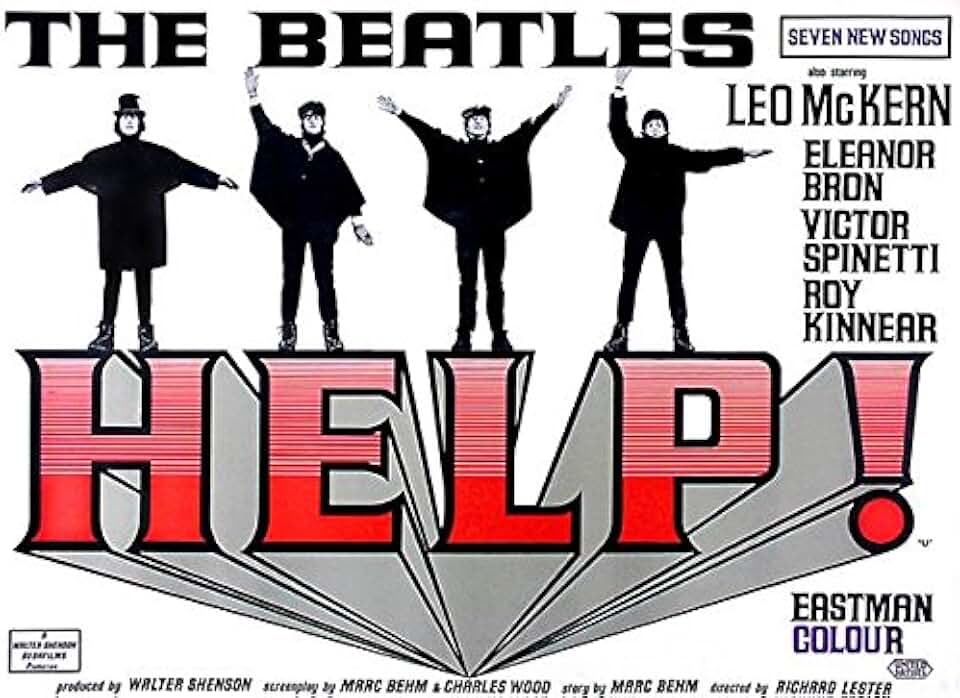
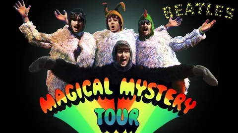
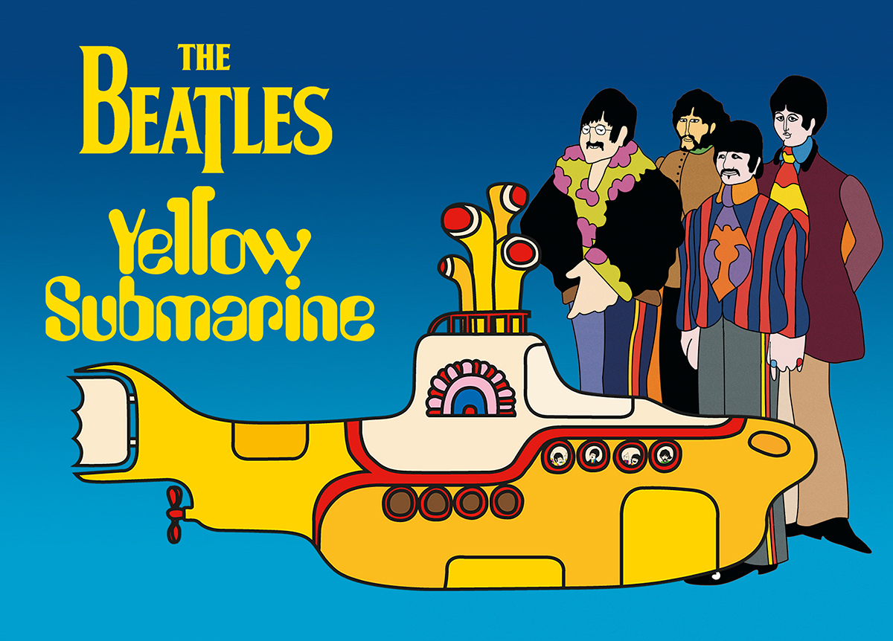
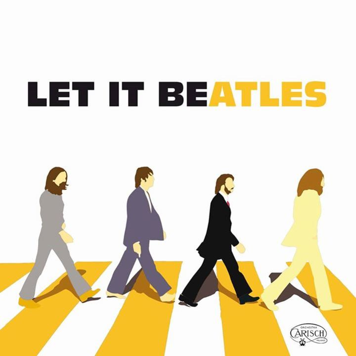

Главная | Общая информация | История | Фильмография | Дискография | Истонички | | Контакты |
| Год | Русское название | Оригинальное название | Афиша | Примечание |
| 1964 | Вечер трудного дня | A Hard Day’s Night | | Х/ф |
| 1965 | (На помощь!) | «Help!» |  | Х/ф |
| 1967 | «Волшебное таинственное путешествие» | «Magical Mystery Tour» |  | Х/ф |
| 1968 | «Жёлтая подводная лодка» | «Yellow Submarine» |  | Х/ф |
| 1970 | «Пусть будет так» | «Let It Be» |  | Х/ф |
© Все права защищены.